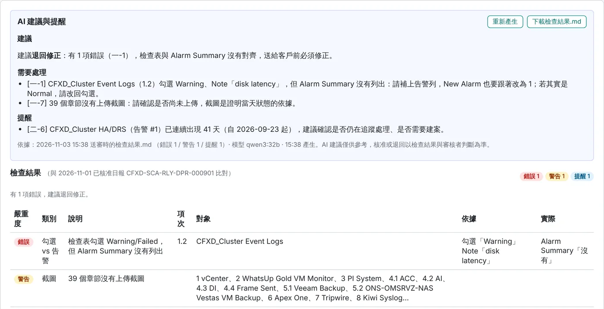
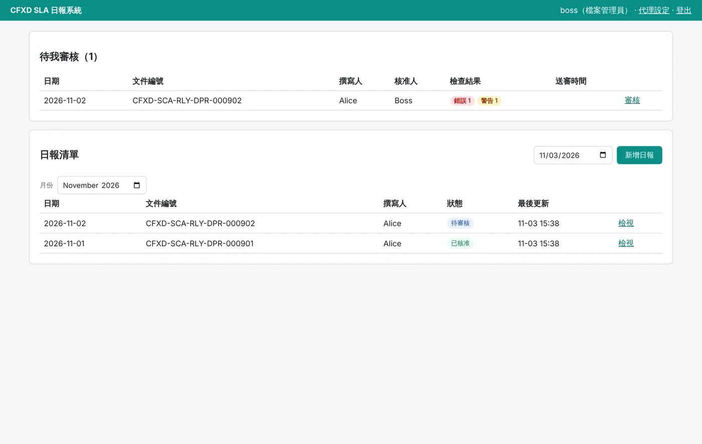
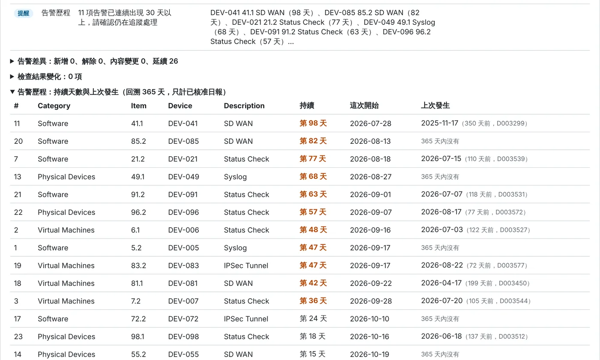
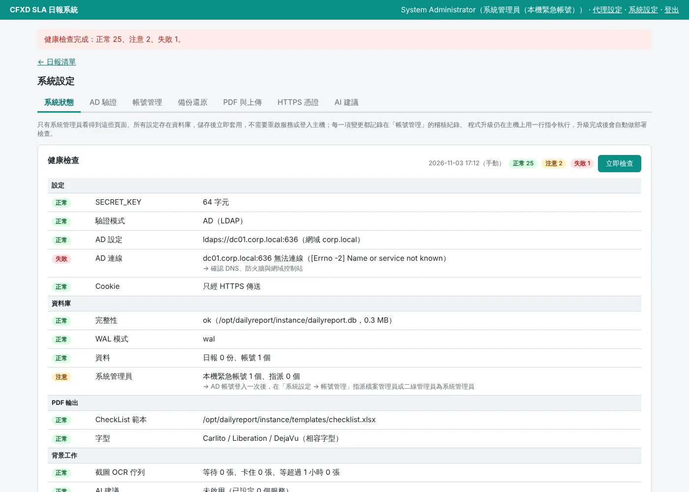
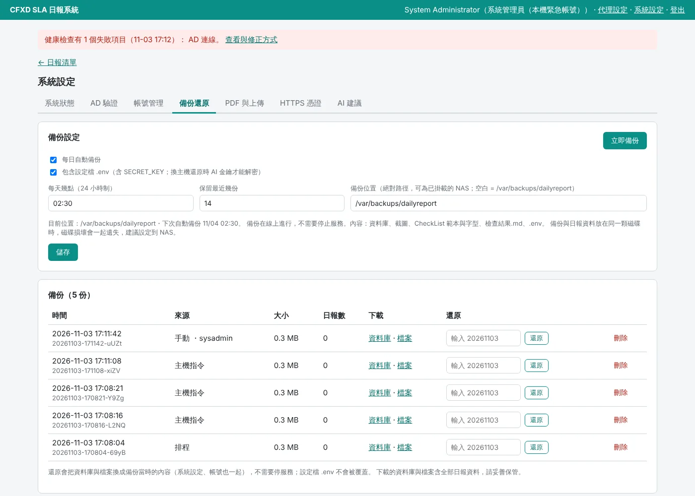
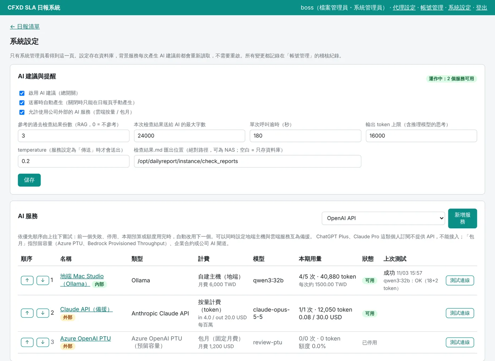
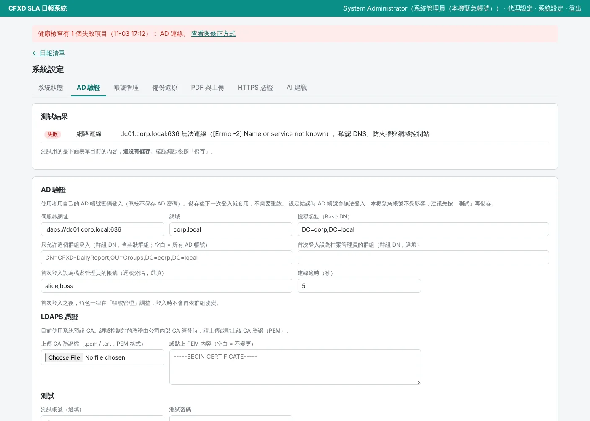

CFXD SLA 每日維運日報系統：線上填寫檢查表與告警，送審時自動比對前一份已核准日報、辨識截圖上的系統日期、計算告警持續天數，並由 AI 依檢查結果提出建議。核准後輸出與原 Word / Excel 範本完全相同排版的 PDF。
The CFXD SLA daily operations report, online: fill in the checklist and alarms, and on submission the system compares with the last approved report, reads the system date on every screenshot, tracks how long each alarm has lasted, and lets AI suggest what to fix. Approved reports export to a PDF laid out exactly like the original Word / Excel templates.
一份日報 85 頁：封面、四大類檢查表、告警摘要、統計圓餅圖、85 張截圖，每一處都要前後一致，還要和昨天對得上。
One report is 85 pages: a cover, four checklist sections, an alarm summary, pie charts and 85 screenshots, all of which must agree with each other and with yesterday.
人工核對耗時又容易漏。Word 與 Excel 分開編輯、合併成 PDF 後再逐頁核對，告警數量、勾選結果、統計數字只要一處沒改就不一致。
Manual checking is slow and misses things. Word and Excel are edited separately, merged into a PDF and checked page by page; one missed edit breaks the alarm counts, ticks or statistics.
錯誤直接送到客戶手上。日報是 SLA 交付文件。已正式發出的日報中，曾有統計加總不符、漏列告警、告警原因和檢查表寫法不一致。
Errors reach the customer. The report is an SLA deliverable. Issued reports have contained totals that did not add up, missing alarms and alarm reasons that contradicted the checklist.
截圖無法證明是當天拍的。截圖是狀態的唯一證據，但沒有人逐張確認右下角的日期。
Screenshots don't prove the date. Screenshots are the only evidence of status, yet nobody checks the clock in the corner of each one.
資料存在資料庫，檢查直接比對資料，不需要再解析 PDF。
Everything lives in a database, so checks compare data directly instead of parsing PDFs.
封面、檢查表（含圓餅圖與公式）、截圖附錄依原 Word / Excel 範本的位置與分頁產生，文字與線條誤差在 0.3 pt 以內。
Cover, checklists (with pie charts and formulas) and screenshot appendix follow the original Word / Excel layout and page breaks, within 0.3 pt.
告警摘要 ↔ 檢查表、告警數量、勾選與備註、記錄欄位、跨日差異，分成錯誤、警告、提醒，直接顯示在審核畫面。
Alarm summary vs checklist, alarm counts, ticks and notes, record fields and day-to-day changes, graded as error / warning / reminder on the review screen.
背景辨識每張截圖工作列與右上角的系統時鐘，日期不是當天就列為錯誤；只有時間或沒有時鐘的畫面另外標出。
A background worker reads the system clock on each screenshot; a wrong date is an error, and screens with no date or no clock are flagged separately.
每筆告警已連續出現幾天、上一次發生在哪一天（回溯 365 天）。持續 30 天以上或解除後又再發生會提醒。
How many days each alarm has lasted and when it last occurred (365-day look-back), with reminders for long-running or recurring alarms.
依檢查結果給審核者建議（退回或核准、要修哪裡），可接地端主機、按量或包月的雲端服務，互為備援。
Suggestions for the reviewer based on the check results, from an on-prem model or pay-per-token / monthly cloud services with fallback.
送審、核准、退回時各存一份 Markdown，格式與 DDoc_compare 比對報告相同，可直接作為 RAG 知識庫。
A Markdown snapshot on submit, approve and reject, in the same layout as DDoc_compare reports, ready for a RAG knowledge base.
角色與職責分離（含只能下載正式 PDF 的檢視者）；檔案管理員可授權二線管理員代簽，文件仍顯示核准人；刪除日報即釋放文件編號。
Roles with separation of duties, including a viewer that can only download final PDFs; file managers can delegate approval while the document still shows the approver; deleting a report frees its document number.
一行 curl 完成安裝。之後 AD、帳號、備份還原、健康檢查、範本、HTTPS 憑證都在「系統設定」頁完成，不需要登入主機。
One curl line installs everything. After that, AD, accounts, backup and restore, health checks, templates and HTTPS certificates are all managed on the settings page, no shell needed.
基本資料、記錄、告警、檢查表、截圖
Details, records, alarms, checklist, screenshots
內容鎖定，產生檢查結果.md
Content locks; check results saved
與前一份已核准日報比對、截圖 OCR
Compared with last approved report, OCR
依檢查結果與過去退回紀錄
From check results and past rejections
由核准人或代簽人看截圖後決定，退回修正直到通過
By the approver or a delegate after viewing the screenshots; rejected reports loop until approved
二線以上確認預覽排版後結案，立即鎖檔
Second line or above checks the preview, then closes and locks it
只產生一次，記錄 MD5，可在「正式文件」頁下載
Rendered once with an MD5, downloadable from the archive page
上傳、取得連結、寄出日報 Mail；失敗中止並可重試
Upload, share link, mail the report; stops on failure, with retry
編號沿用 DDoc_compare 比對報告；錯誤 建議退回、警告 請確認、提醒 參考。
Numbering follows DDoc_compare reports. Error reject, Warning confirm, Reminder for information.
| 步驟 | 檢查 | 例子 |
|---|---|---|
| 一-1 | 告警摘要 ↔ 檢查表 | 勾了 Warning / Failed，Alarm Summary 卻沒列；Reason 與 Note 寫法不同 |
| 一-2 | 告警數量與告警表 | New + Known + False ≠ 告警項數；有新增告警但 True Alarm Record 是 N/A |
| 一-4 | 檢查表勾選與備註 | 未勾選；勾 Warning / Failed 但 Note 空白 |
| 一-5 | 敘述 ↔ 記錄欄位 | 寫「今日沒有 issue」但記錄有資料，或反過來 |
| 一-7 | 截圖 | 章節沒有截圖；截圖日期不是當天；畫面沒有日期 |
| 二-1 | 跨日一致性 | New Alarm 數 ≠ 與前一份比對實際新增；Known Alarm ≠ 延續數 |
| 二-2～4 | 告警、統計、勾選變化 | 新增、解除、內容變更的告警；各分類 Normal / Warning / Failed 增減 |
| 二-6 | 告警歷程 | 已連續出現幾天、上次發生日期；持續 30 天以上、解除後又再發生 |
| Step | Check | Example |
|---|---|---|
| 1-1 | Alarm summary ↔ checklist | Warning / Failed ticked but not in the alarm summary; Reason and Note disagree |
| 1-2 | Alarm counts | New + Known + False ≠ number of alarms; new alarm but True Alarm Record is N/A |
| 1-4 | Ticks and notes | Unticked items; Warning / Failed with an empty note |
| 1-5 | Narrative ↔ records | "No issue today" while records exist, or the reverse |
| 1-7 | Screenshots | Missing sections; wrong date on the screenshot; no date on screen |
| 2-1 | Day-to-day consistency | New Alarm count ≠ alarms actually new since the last approved report |
| 2-2…4 | Changes | New, cleared and changed alarms; Normal / Warning / Failed per category |
| 2-6 | Alarm history | Days running and last occurrence; 30+ days or recurring |
AI 只看檢查結果.md 和過去被退回的檢查結果，必須標出依據的檢查步驟，不能編造。所有設定都在網頁上的「系統設定」，只有系統管理員看得到。
The AI reads only the check results and past rejections, must cite the check step behind each point and may not invent anything. Everything is configured on the admin-only settings page.
Ollama、LM Studio、vLLM、llama.cpp、LocalAI。資料不離開公司，可填每月攤提成本比較。
Ollama, LM Studio, vLLM, llama.cpp, LocalAI. Data never leaves; enter amortised monthly cost to compare.
Claude、OpenAI、Gemini、Azure OpenAI、AWS Bedrock、Mistral、DeepSeek、OpenRouter 等。填單價、設每月預算上限。
Claude, OpenAI, Gemini, Azure OpenAI, AWS Bedrock, Mistral, DeepSeek, OpenRouter and more, with prices and a monthly budget cap.
Azure PTU、Bedrock 預留容量、企業合約、公司 AI 閘道。填月費、設每月 token 額度。
Azure PTU, Bedrock provisioned throughput, enterprise contracts, company AI gateways, with a monthly fee and token quota.
| 角色 | 可以做的事 |
|---|---|
| 系統管理員 | 擁有所有權限（不受職責分離限制）；只有系統管理員能調整角色與系統設定。由檔案管理員或二線管理員兼任（AD 帳號可），一線使用者與檢視者不能擔任 |
| 本機緊急帳號 | 系統管理員權限、不經 AD；AD 無法驗證時使用 |
| 檔案管理員 | 指派、審核、退件、結案、新增、編輯、刪除；授權二線管理員代理 |
| 二線管理員 | 新增、編輯、送審、結案；經授權可代審核、代指派、代退件、代刪除 |
| 一線使用者 | 新增、編輯、送審 |
| 訪客 | AD 帳號首次登入的預設角色；只能看歡迎頁，等系統管理員開通 |
| Role | Can do |
|---|---|
| System admin | Everything, plus accounts and settings. Granted to file managers or second-line managers (AD accounts too); never to first-line users |
| Break-glass account | Local admin account, no AD; for when AD is down |
| File manager | Assign, approve, reject, close, create, edit, delete; delegate to second-line managers |
| Second-line manager | Create, edit, submit, close; with delegation approve, assign, reject and delete |
| First-line user | Create, edit, submit |
| Guest | Default for a first AD sign-in; sees only a welcome page until an administrator grants a role |
職責分離：撰寫人與送審人都不能核准自己的日報（系統管理員擁有所有權限，不受此限）。指派、代簽、刪除、設定變更全部寫入稽核紀錄。
Separation of duties: neither the author nor the submitter can approve their own report. Assignments, delegations, deletions and settings changes are all audited.
畫面中的人名、文件與用量都是展示用資料。
Names, documents and usage figures are demo data.







支援 Ubuntu 24.04 / 26.04 LTS、Debian 13（x86_64 / aarch64；已實測 Ubuntu 24.04）。安裝與更新時需要能連到 GitHub、PyPI 與 OCR 模型下載站。
Ubuntu 24.04 / 26.04 LTS or Debian 13 (x86_64 / aarch64; tested on Ubuntu 24.04). Installs and updates need access to GitHub, PyPI and the OCR model download site.
| 項目 | 最低 | 建議 |
|---|---|---|
| CPU | 1 核心（x86_64 / aarch64） | 2 核心 |
| 記憶體 | 2 GB（建議另加 swap） | 4 GB |
| 磁碟 | 3 GB 可用空間 | 20 GB 以上（依截圖量與備份保留份數） |
| Item | Minimum | Recommended |
|---|---|---|
| CPU | 1 core (x86_64 / aarch64) | 2 cores |
| Memory | 2 GB (add swap) | 4 GB |
| Disk | 3 GB free | 20 GB+ (depends on screenshots and backups kept) |
截圖 OCR 背景服務約需 1 GB 記憶體，是最大宗。磁碟主要是截圖與備份：預設保留 14 份完整備份，約佔資料量的 14 倍，可在系統設定改到 NAS 或減少份數。一般部門每天幾份日報、幾十張截圖，2 核心 / 4 GB / 20 GB 即足夠。
Screenshot OCR takes about 1 GB of memory, the largest share. Disk goes mostly to screenshots and backups: 14 full backups are kept by default (about 14× the data), which can be moved to a NAS or reduced in the settings. For a typical team with a few reports and dozens of screenshots a day, 2 cores / 4 GB / 20 GB is enough.
也可以一次帶入 AD 與範本（都可以之後再補）：
Or pass AD settings and the template up front (both can be added later):
--ntp 可改）--ntp)中途失敗時修正問題後重跑同一行即可；已存在的 .env、資料庫、憑證與緊急帳號密碼都不會被覆蓋。
If a step fails, fix it and run the same line again; an existing .env, database, certificate and admin password are never overwritten.
安裝後用緊急帳號登入「系統設定」：AD 驗證、上傳 CheckList 範本、指派系統管理員、確認備份位置、換 HTTPS 憑證。
Then sign in with the break-glass account and open Settings: AD, CheckList template, admin grants, backup target and HTTPS certificate.
逐項檢查系統、程式版本、權限、設定、資料庫、PDF 範本與字型、背景工作、服務、HTTPS 與備份。沒過的項目下一行直接印出修正指令；有失敗時結束代碼為 1，可放進監控。
Checks the system, version, permissions, settings, database, PDF template and fonts, background jobs, services, HTTPS and backups. Every failing item prints the command that fixes it; exits 1 on failure so monitoring can use it.
| 分頁 | 做什麼 |
|---|---|
| 系統狀態 | 健康檢查（與 doctor 同一套），可定時自動檢查，失敗時每一頁上方提醒 |
| AD 驗證 | 網域控制站、群組、LDAPS CA 憑證；儲存前先測試 |
| 帳號管理 | 角色、系統管理員指派、本機緊急帳號、稽核紀錄 |
| 備份還原 | 每日備份時間、保留份數、NAS 位置；立即備份、下載、還原 |
| PDF 與上傳 | CheckList 範本、字型、上傳上限 |
| HTTPS 憑證 | 上傳公司 CA 憑證，檢查後自動套用到 nginx，失敗會還原 |
| AI 建議 | AI 服務、計費、提示詞、用量 |
| Tab | What it does |
|---|---|
| System status | Health check (same checks as doctor), scheduled runs, banner on failure |
| AD | Domain controller, groups, LDAPS CA certificate; test before saving |
| Accounts | Roles, admin grants, break-glass accounts, audit log |
| Backup | Daily time, retention, NAS target; back up now, download, restore |
| PDF & uploads | CheckList template, fonts, upload limit |
| HTTPS | Upload a CA-signed certificate; applied to nginx after checks, rolled back on failure |
| AI | Providers, billing, prompt, usage |
主機上的指令只用於升級（升級後自動 doctor 驗證）與網頁無法開啟時的救援：
Shell commands are only for upgrades (verified by the doctor afterwards) and for rescue when the web UI is down:
| 指令 | 做什麼 |
|---|---|
| … | sudo bash -s -- upgrade | 先備份，再更新程式、相依套件、重啟服務，最後 doctor 驗證 |
| … | sudo bash -s -- doctor | 以 root 做完整的部署檢查 |
| dailyreport.sh restore <資料夾> | 網頁無法開啟時，停止服務後從備份還原 |
| dailyreport.sh restart / status | 重新啟動 / 查看服務狀態 |
| Command | What it does |
|---|---|
| … | sudo bash -s -- upgrade | Backs up, updates code and dependencies, restarts, then verifies with the doctor |
| … | sudo bash -s -- doctor | Full deployment check as root |
| dailyreport.sh restore <dir> | Restore with services stopped, when the web UI is down |
| dailyreport.sh restart / status | Restart / show service status |
dailyreport.sh 位於 /opt/dailyreport/scripts/，以 sudo bash 執行。
dailyreport.sh lives in /opt/dailyreport/scripts/; run it with sudo bash.